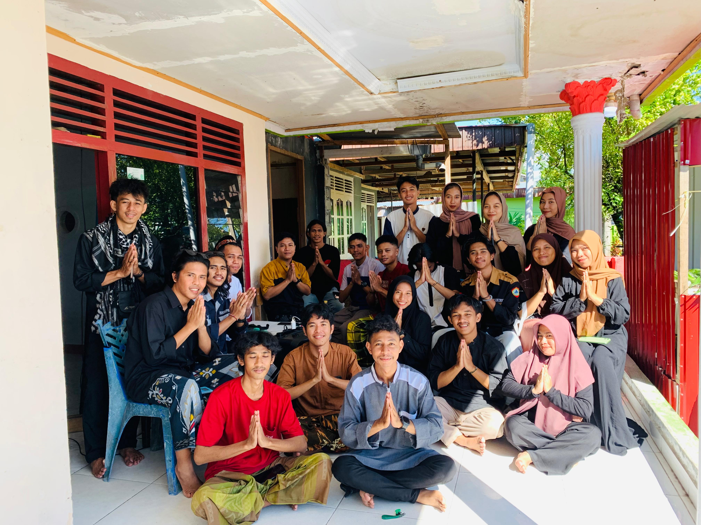

Monumen Trikora Salakan Kabupaten Banggai Kepulauan


Sebagai wujud dari kecintaan terhadap sejarah, Monumen Trikora dibangun dengan ukuran panjang 9 meter,
lebar 12 meter, dan tinggi 61 meter.
Pengunjung berjalan masuk ke kawasan monumen Tri Komando Rakyat (Trikora) di Salakan, Banggai Kepulauan, Sulawesi Tengah, Rabu (23/8/2023). Pemkab setempat menata kembali monumen peringatan pembebasan Irian Barat setinggi 17 meter yang diresmikan Presiden Kedua Indonesia Soeharto pada 12 Agustus 1995 itu untuk dijadikan sebagai kawasan wisata sejarah di wilayah tersebut.